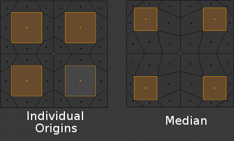

各自的原心¶
Reference
Ctrl-PeriodIn Object Mode¶

Rotation around individual origins.
The Origin of an object is shown in the 3D View by a small orange circle. This is highlighted in the image to the right by the red arrow. It tells Blender the relative position of that object in 3D space. What you see in the 3D View (vertices, edges, etc.) is what makes up the object.
The origin does not have to be located in the center of the geometry (e.g. mesh). This means that an object can have its origin located on one end of the mesh or even completely outside the mesh. For example, the orange rectangle in the image has its Origin located on the far left of the mesh.
Now let us examine: Rotation around the individual origins:
- The blue rectangle has its Origin located in the center of the mesh, while the orange rectangle has its Origin located on the left hand side.
- When the Pivot Point is set to Individual Origins, the origin of each object (indicated by the red arrow) remains in place while the object rotates around it in the path shown by the black arrow.
Rotation around individual origins (middle) compared to the median point (right).

Scaling around individual origins (middle) compared to the median point (right).
In Edit Mode¶
In Edit Mode, setting the Pivot Point to Individual Origins produces different results when the selection mode is set to Vertex, Edge or Face. For example, Vertex mode produces results similar to setting the pivot point to median and Edge mode often produces distorted results. Using Individual Origins in Face mode produces the most predictable results.

Rotation of grouped faces with the pivot point indicated by the image text. |
{kind=link}
As can be seen in the images above, faces that touch each other will deform when rotated when the pivot point is set to Individual Origins. Faces that do not touch will rotate around their Individual Origins (their center).

Scaling with non-touching faces. |
{kind=link}
{kind=link}
Groups of faces and Fgons can be scaled without their outside perimeter being deformed. However, the individual faces inside will not be scaled uniformly.
{kind=link}
Modeling with faces and individual origins as the pivot point.
Once you are aware of its limitations and pitfalls, this tool can save a lot of time and lead to unique shapes. This "anemone" was modeled from a 12 sided cylinder in about 10 minutes by repeatedly using this workflow: extrusions of individual faces, scaling with median as a pivot point, and scaling and rotations of those faces with Individual Origins as pivot points.